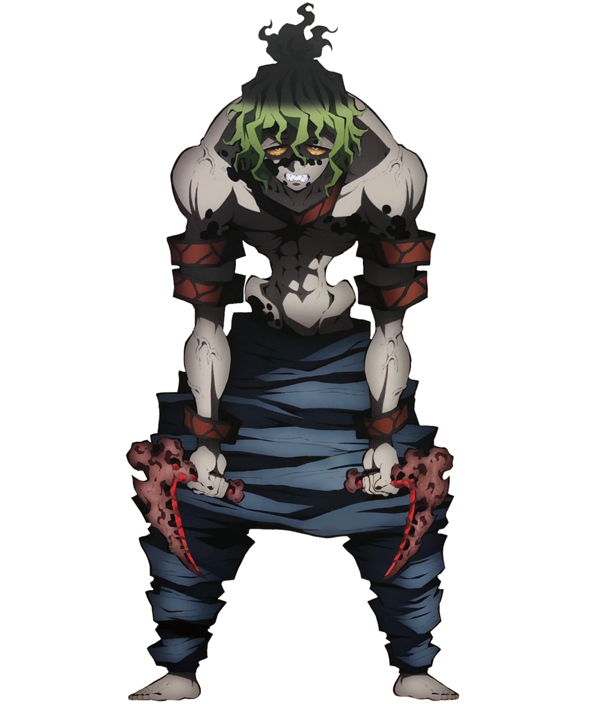
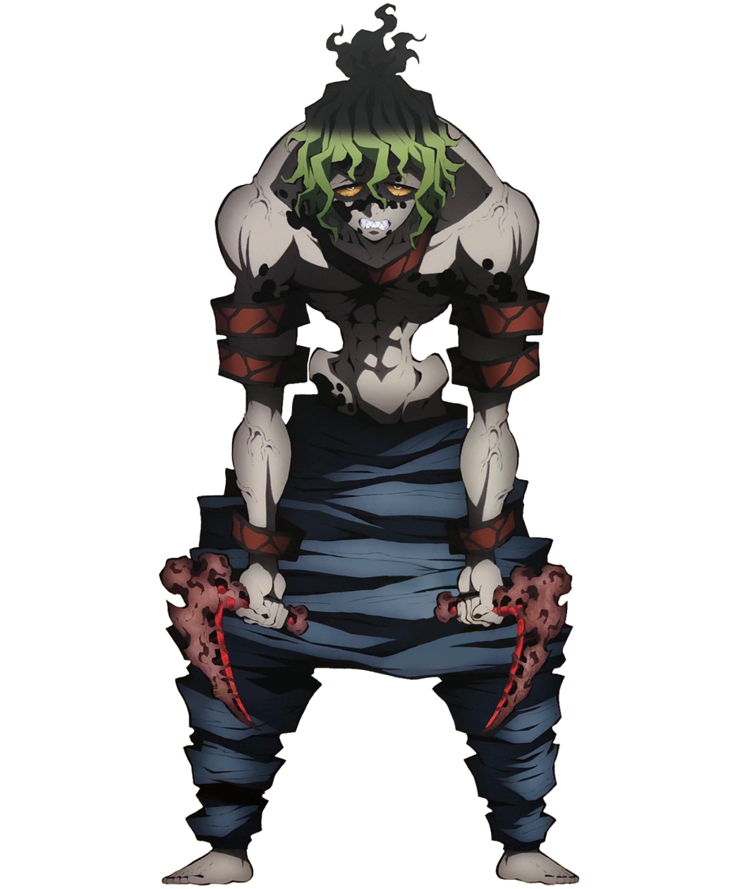

Gyutaro is one of the primary antagonists in the Entertainment District Arc of Demon Slayer: Kimetsu no Yaiba. He is a demon affiliated with the Twelve Kizuki, holding the position of Upper Rank Six, a position he shares with his younger sister, Daki.
Over a century ago, Gyutaro was a human child who worked as a debt collector in the Rashomon Riverbank of Yoshiwara, the lowest class in the Entertainment District, before he and Daki were turned into demons personally by Doma, who was Upper Rank Six at the time.
 
